Como navegar
em protagonistas
da cultura digital
EM PROTAGONISTAS DA
CULTURA DIGITAL
Resultado como consequência.

EXISTIMOS?


objetivos
estratégicos

players
analisados

redes a serem
analisadas

dados em redes
sociais

via IA

I.A de territórios
e outros
formatos de
análise

de personas
(cenário atual).

calibragens e
recomendações
das Pessoas
Inesquecíveis
Pertencimento


comunicação / criativa /
multitarefas
o lifestyle ganha forma em
imagens, experiências e
histórias
para aproximação com
públicos mais jovens
FIRST
always on
on e off
É o mesmo olhar aplicado
a todas as frentes.
A lente é social.


Direção e lideranças de criação, mídia, dados, influência, atendimento e financeiro. É essa camada que transforma a estratégia em rotina — e a rotina em resultado.


 apresenta
apresenta
 Craques Gigantes
Craques Gigantes
Contexto
No Brasil, 45% das pessoas buscam na renda extra a solução para apoiar as finanças da família. Nesse cenário, oportunidades de faturamento adicional ganham ainda mais relevância social e impacto real.
Insight
Durante a Copa, o mercado disputa atenção com os mesmos formatos e criadores. O Magalu foi por outro caminho: em vez de contratar, revelou influência através dos seus próprios afiliados.
Ideia
“Craques Gigantes” foi uma competição nacional que transformou afiliados em jogadores de uma liga de vendas, convertendo influência real em renda extra no maior campo do mundo: o feed.


 Grand Prix em Social Media · 2 pratas · 5 bronzes
Grand Prix em Social Media · 2 pratas · 5 bronzes


Grand Prix em Social Media · 2 pratas · 5 bronzes apresenta
apresenta
 Loja do Fiuk
Loja do Fiuk
Contexto
Fiuk virou assunto ao vender itens pessoais para pagar dívidas. Em vez de só entrar na trend, vimos a chance de dar um novo sentido a esse capítulo com os Influenciadores Magalu.
Insight
Se o Fiuk já usava a própria influência para vender o que era dele, por que não usá-la para vender o que ele recomenda, num programa de afiliados reconhecido pelo Brasil?
Ideia
Do meme à lojinha: o Magalu convidou Fiuk para ser afiliado oficial do programa, com loja própria, curadoria de produtos e cupom exclusivo — mais forte e proprietário do que um publi.


 apresenta
apresenta
 Central do Corre
Central do Corre
Contexto
No delivery, tudo foi pensado para chegar rápido. Os entregadores já tinham canais para tirar dúvidas. A informação existia — o desafio era fazê-la chegar de forma mais próxima e humana.
Insight
O problema nunca foi a falta de informação: era a falta de identificação. O mapeamento da comunidade revelou uma forte conexão com a cultura do rap e da rima.
Ideia
A Central do Corre: um hack no Instagram da Keeta onde dúvidas reais dos entregadores viraram rap. Com Vitor Massaki no flow, a informação ganhou a linguagem da rua.


 apresenta
apresenta
 Pulando o Bloco
Pulando o Bloco
Contexto
O Carnaval faz o delivery explodir, mas trava a cidade. Bloqueios imprevisíveis e rotas quebradas viram o pesadelo de quem precisa entregar rápido — e a marca perde na experiência.
Insight
Enquanto a cidade curte, tem gente fazendo ela funcionar. A Keeta entra numa conversa legítima: ser a marca que protege o corre do motoca em tempo real.
Ideia
Transformamos as notificações push do app e as redes da marca em uma central de informação urbana, ajudando entregadores a evitar os bloqueios dos bloquinhos de rua.


 3 Grand Prix em Eficácia · 3 ouros · 3 bronzes
3 Grand Prix em Eficácia · 3 ouros · 3 bronzes

3 Grand Prix em Eficácia · 3 ouros · 3 bronzes apresenta
apresenta
 Brasil Corre
Brasil Corre
Contexto
Em Copa do Mundo, todo brasileiro vira técnico: sai a convocação e começa a resenha sobre quem merecia estar e quem deveria vestir a camisa. Mas tem um time que entra em campo e nunca aparece na lista.
Insight
Enquanto o Brasil discute a convocação, tem uma seleção inteira fazendo o corre: os entregadores que seguem nas ruas enquanto o país torce. Se eles fazem a Copa acontecer, por que nunca são convocados?
Ideia
A Keeta convocou 22 entregadores parceiros para jogar com Edílson, Dinei, Pacote e Biro-Biro. Não para fingir que entregador é jogador, mas para pôr na conversa da Copa quem também merece a camisa.


 apresenta
apresenta
 Seu Pneu de Carro Novo
Seu Pneu de Carro Novo
Contexto
A Bridgestone lançou a campanha “Seu Pneu de Carro Novo” e o desafio era dar escala à mensagem nas redes — não só visibilidade, mas conexão, interação e compartilhamento.
Insight
Transformar uma mensagem de produto em conteúdo com potencial cultural pedia mais do que audiência: pedia carisma, reconhecimento popular e códigos que o público já conhece.
Ideia
Rodrigo Faro como protagonista da estratégia, com sua personalidade e seu repertório de bordões dando vida à campanha — a mensagem da marca mais próxima, divertida e compartilhável.


 apresenta
apresenta
 Now New Barra!
Now New Barra!
Contexto
O BarraShoppingSul queria se aproximar da geração Z, que vive entre experiências, lugares e conteúdos — e virar um espaço conectado ao ritmo das redes e aos novos comportamentos de consumo.
Insight
Para quem descobre e compartilha tudo em tempo real, não basta mostrar o que acontece no shopping: era preciso colocar essa geração dentro dele e deixar o olhar dela traduzir o Barra.
Ideia
Nasce NOW! NEW BARRA: o shopping virou um estúdio de criação a céu aberto, ocupado por creators durante três dias — o Barra como mídia viva, indo direto para as redes.


Sumário
Credenciais WT.AG · 2026 · abertura e cinco atos, 29 telas